01 / SIGN↗
01 / SIGN↗
상대임 가지야
INTENDEDVertical RTL→MISREADHorizontal LTR
임야, 대지, 상가 (forest land, building land, shops) becomes 상대임 가지야—an apparent nonsense phrase.
Words can mean something else when read in the wrong direction—or the wrong order.
01 / SIGN↗
임야, 대지, 상가 (forest land, building land, shops) becomes 상대임 가지야—an apparent nonsense phrase.
 02 / TEXT↗
02 / TEXT↗
A lesson on poverty and study turns into “eat people, eat people.”
 03 / SIGN↗
03 / SIGN↗
Four soups ending in 탕 (tang) become 탕탕탕탕—the sound of gunshots.
 04 / SIGN↗
04 / SIGN↗
うどん・そば (udon and soba) becomes the nonsensical そどうばん.
 05 / PACKAGING↗
05 / PACKAGING↗
“HD video converter” becomes “erotic video converter” when HD resembles エロ.
 06 / SIGN↗
06 / SIGN↗
肉のこーべや (Kobeya Meat) becomes “this meat is bad.”
 07 / MENU↗
07 / MENU↗
Read down, the endings of menu items become a rhythmic string of syllables.
 08 / SIGN↗
08 / SIGN↗
A warning that the rooftop observation deck is slippery reads like a strange poem down the columns.
 09 / SIGN↗
09 / SIGN↗
スゴイまくら (“amazing pillow”) becomes three puzzling pairs when each banner is read down.
 10 / MENU↗
10 / MENU↗
The drink list is set in rows; read down the third column, the kana spell コロン, “colon.”
 11 / SIGN↗
11 / SIGN↗
荷物リフト, コンベヤ and 投入リフト run down the sign in columns; read across, the kana line up as リベリ and フヤフ.
 12 / SIGN↗
12 / SIGN↗
Four treatments run left to right; the third column spells 修正牙口, “fix your teeth.” 牙口好, “good teeth,” goes with a hearty appetite.
 13 / BANNER↗
13 / BANNER↗
The columns read right to left: 指望传销致富、生活没有出路, a warning against pyramid schemes. Left to right they become 生活没有出路、指望传销致富—the warning turns into an invitation.
 14 / SIGN↗
14 / SIGN↗
The panels step down from the right and read right to left: すべての電車が稲荷駅に停車します, “all trains stop at Inari Station.” Read left to right, they become すまし車停…
 15 / SIGN↗
15 / SIGN↗
The panels read ご予約 along the top and 受付中 along the bottom; read down each panel instead and they become ご受予付約中.
 16 / POSTER↗
16 / POSTER↗
The poster sets 人民相信党 above 没有好下场; read as one sentence, the lines say the people trust the Party—and come to no good end.
 17 / SIGN↗
17 / SIGN↗
The stall meant 没有科技，都是手艺—no tech, all craft. The panels went up with 科技 and 手艺 the wrong way round, so the sign promises the opposite; the shop went viral anyway.
 18 / BANNER↗
18 / BANNER↗
A tea shop's ラーメン banner was flipped and hung sideways about a decade ago; seen from the back the mirrored kana read ルーメソ, and the shop kept it that way.
 19 / BILLBOARD↗
19 / BILLBOARD↗
999 感冒灵 hung its billboard upside down for exam season: the logo reads 666, the students' shorthand for doing brilliantly.
.jpg) 20 / NOREN↗
20 / NOREN↗
The noren at the eel restaurant 小川菊 sets うなぎ right to left; read left to right, the same kana spell ぎなう.
 21 / NOREN↗
21 / NOREN↗
The confectioner とらや hangs its noren with the name set right to left; read left to right, the kana spell やらと.
 22 / SIGN↗
22 / SIGN↗
The florist's sign sets ハナ right to left, so the kana read ナハ—while FLORIST above it runs the ordinary way.
 23 / SIGN↗
23 / SIGN↗
The old sign sets 山基産業株式会社 right to left; read left to right it opens 社会式, and the company name runs backwards.
 24 / NOREN↗
24 / NOREN↗
The tempura shop's noren sets 天婦羅 right to left; read left to right, the characters become 羅婦天.
 25 / NOTE↗
25 / NOTE↗
The notice sets its columns left to right, the opposite of vertical Japanese, so right-to-left readers get the lines backwards—and 有人レジ, the staffed register, is typed 友人レジ.
 26 / SIGN↗
26 / SIGN↗
Weathering ate parts of the ショッパーズ sign and left ンョ゛ハー; the rooftop sign above still spells the shop's name.
 27 / LABEL↗
27 / LABEL↗
The old label sets 特級高粱酒 right to left, so a left-to-right reader gets 酒粱高級特; Kinmen's labels switched direction around 1980.
 28 / SIGN↗
28 / SIGN↗
The shop is called ちからラーメン, but the sign draws 力 as カ and leaves ちから in tiny furigana—so passersby read “colour ramen.”
 29 / BANNER↗
29 / BANNER↗
The graduation board meant 前途亦灿灿, “the future shines,” but printed 烂烂, so it wishes the class a rotten future instead.
 30 / POSTER↗
30 / POSTER↗
The poster meant 夯爆了, slang for “a hit,” but printed 劣爆了, “terrible,” so the advert insulted the ice cream it was selling.
 31 / SIGN↗
31 / SIGN↗
The estate stencil was sprayed from the wrong side, mirroring every stroke of 金秋小区; repainting kept the error alive for twenty years.
 32 / SIGN↗
32 / SIGN↗
The renewed board for 北千住 printed 干 in place of 千, so it reads 北干住 while the furigana below still says きたせんじゅ.
 33 / SIGN↗
33 / SIGN↗
The shop meant Wi-Fi, but the board advertises a wife instead: wifeあります, charging OK.
 34 / SIGN↗
34 / SIGN↗
The parking sign belongs to うなぎの又一, but the shop name 又一 is drawn so that it reads as the katakana ヌー.
 35 / SIGN↗
35 / SIGN↗
The evacuation sign in Minamisanriku renders スポーツ交流村 as Spouse Exchange Village, two letters short of a sports facility.
 36 / SIGN↗
36 / SIGN↗
The trail sign says 山頂はこちら, “the summit is this way”; the machine translation underneath reads Click here for the summit, as if the mountain were a link.
 37 / SIGN↗
37 / SIGN↗
The zoo asks visitors to view quietly; its Chinese line 静静請看 also reads as “please look, Jingjing”, turning the adverb into a panda’s name.
 38 / BOARD↗
38 / BOARD↗
The board lists departure time, cars and doors; the 8:21 train’s door count reads Sold Out, the translation of 満席—the train is full, not on sale.
 39 / BANNER↗
39 / BANNER↗
The banner advertises ランチ 1000円～; written in hiragana and caught by the wind, the ら bends into う, so lunch reads as うんち.
 40 / BANNER↗
40 / BANNER↗
A 野菜直売所 banner hung inside-out; from the back the mirrored characters read 理系直売所—“science department direct sales.”
 41 / BANNER↗
41 / BANNER↗
The same inside-out trick on a shop banner: いらっしゃいませ comes back as りさっしゃいまサ.
 42 / BANNER↗
42 / BANNER↗
A シャモ鍋 banner hung inside-out; from the back the mirrored characters read シャチ鍋, an orca hotpot instead of chicken.
 43 / BANNER↗
43 / BANNER↗
The festival-lantern banner 盆提灯, read from the back, becomes 盆髪城—a hair castle for the bon holiday.
 44 / BANNER↗
44 / BANNER↗
The sweet-corn banner read from the wrong side: とうもろこし comes out as うそまさこし, which opens with “lie.”
 45 / BANNER↗
45 / BANNER↗
A karaoke banner hung inside-out: the brand ＤＡＭ reads ＭＡＤ.
 46 / BANNER↗
46 / BANNER↗
A Kochi banner for リョーマの休日 seen from the back: the mirrored kana read リューマの村日, a village day instead of a holiday.
 47 / SIGN↗
47 / SIGN↗
The lit sign says 徽乡宴府; the wooden plaque below spells it 微乡宴府, minus the 徽’s top. The shop calls the error deliberate.
 48 / BANNER↗
48 / BANNER↗
The Mid-Autumn banner quotes Su Shi’s 千里共嬋娟; converted from simplified to traditional without proofreading, 里 came out as 裡, “inside.”
 49 / SIGN↗
49 / SIGN↗
The Wujiang shop sells 海棠糕, the begonia-shaped cake; its sign sets 堂 for 棠, and locals argue over whether the slip is carelessness or marketing.
 50 / SIGN↗
50 / SIGN↗
A temporary Hong Kong road sign sends drivers to Disncy and Tung Chun, a letter short in both names.
 51 / SIGN↗
51 / SIGN↗
A new Shanghai metro station letters 呼玛路 as Human Road, the input method finishing the word, and 富锦路 as Fujin Poad.
 52 / SIGN↗
52 / SIGN↗
The park bans 炸鱼, fishing with explosives; the translation takes 炸 as “fried” and outlaws fried fish instead.
 53 / MENU↗
53 / MENU↗
A Yau Ma Tei cha chaan teng writes its menu by sound: 黑椒雞扒飯 comes out 克召雞扒反, legible only if you say it aloud in Cantonese.
 54 / SIGN↗
54 / SIGN↗
The boat ticket board caps 核載12人, certified for twelve passengers; the English renders 核載 as “nuclear loading”, as if the boat ran on a reactor.
 55 / SIGN↗
55 / SIGN↗
A toilet doorway in Zhaoyu’s old town warns 小心碰头, mind your head; the English renders it word for word as “Carefully Meet”.
 56 / SIGN↗
56 / SIGN↗
A Suzhou lamp-post sign gives 平江路 the English name of 狮子林, the garden next door, and shortens it to THE LION FOREST GARD.
 57 / SIGN↗
57 / SIGN↗
The tile warns 小心地滑, “caution: slippery floor”; read word by word, 地 becomes the adverb and the sign orders you to slip carefully.
 58 / MENU↗
58 / MENU↗
The café board writes ホットドック, a kana short of ホットドッグ, and under it offers “Hot topic”—neither a hot dog nor a subject.
 59 / LABEL↗
59 / LABEL↗
The buffet labels がんも煮物, simmered ganmo tofu; the English reads “Boiled cancer”, as if がん had been taken for 癌.
 60 / SIGN↗
60 / SIGN↗
A toilet on the Xi’an–Chengdu train asks passengers not to flush while passing another 动车; the abbreviation EMU turns the train into an emu.
 61 / SIGN↗
61 / SIGN↗
The board asks drivers to keep the route 文明, civilised; the English orders them to “SET UP THE CIVILIZATION PASSAGE” instead.
.jpg) 62 / SIGN↗
62 / SIGN↗
The supermarket labels its 无糖食品专架, the sugar-free food shelf, “There be no candy food”—a sentence about absence instead of a section name.
 63 / SIGN↗
63 / SIGN↗
At a Shanghai ferry dock, 注意高低空档, mind the step between boat and shore, becomes the memo “NOTE THAT THE LEVEL OF GAP”.
 64 / SIGN↗
64 / SIGN↗
At the Tiantishan grottoes the sign says 请勿攀爬, do not climb; the English doubles the m and slips a b in: “No climmbing”.
 65 / BILLBOARD↗
65 / BILLBOARD↗
A Taoyuan campaign billboard borrows the Nike line and prints the last two letters the wrong way round: “JUST DO TI”.
 66 / SIGN↗
66 / SIGN↗
A JR Nishifunabashi sign lists 新宿 as “Shijuku”, one n short; the correction is a white sticker pasted over the missing letter.
 67 / LABEL↗
67 / LABEL↗
The sticker sheet prints ￥ signs; turned upside down, their strokes read as 夫, so the shop appears to stock husbands by the sheet.
 68 / BILLBOARD↗
68 / BILLBOARD↗
A Zibo billboard drops the 未 from 关爱未成年人, “care for minors”, so the slogan asks the public to protect adults instead.
 69 / SIGN↗
69 / SIGN↗
The 出口 374 board names 河北 and 南京, one per line. Read down the columns and the four characters become 河南 and 北京. The picture is an edit; the original sign is unknown.
 70 / POST↗
70 / POST↗
A Kōchi card shop congratulated its winner as クソヘタ怪人石神; the handle is クセヘタ, and the swapped セ and ソ call him hopeless at the game.
 71 / BAG↗
71 / BAG↗
The tea chain’s bag seals read 打包在忙，吸管别忘; the line needs 再, “however busy packing gets”, so the typo turns a reminder into a status report.
 72 / POSTER↗
72 / POSTER↗
A Nowwa Coffee light-box credits its ambassador as 帅气青年男性, “handsome young male”, in the slot where his name belongs.
 73 / MENU↗
73 / MENU↗
A Shanghai lamb restaurant prices its cuts at 19元（客）, per portion; 客 was typed 克, so the menu charges 19 yuan a gram—9,500 a jin.
 74 / PASS↗
74 / PASS↗
Shanghai Disney’s annual-pass booklet prints 迪士尼 as 迪土尼, putting 土 for 士, so the park’s name gains a “tu”.
 75 / NOTICE↗
75 / NOTICE↗
Daiso’s soil for medaka promised a comfortable environment “for killifish”; one i went missing, so the label sells a fish-killing substrate.
 76 / LABEL↗
76 / LABEL↗
The wash label on Luckin’s Hello Kitty charm prints HELLO as HEELO; online the extra E turned the greeting into 喝喽, “drink up”.
 77 / SIGN↗
77 / SIGN↗
A supporter’s rally board outside Matsudo Station prints 高市早苗 as 高市早笛—苗 swapped for 笛, turning the candidate into a flute.
 78 / SIGN↗
78 / SIGN↗
A construction sign merges ご迷惑をおかけします and ご協力をお願いします into ご迷惑をお願いします—“please be inconvenienced”.
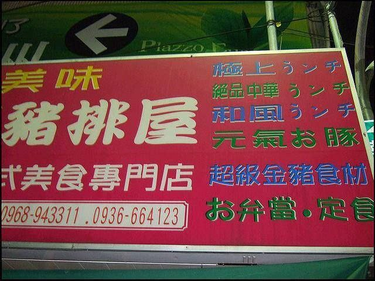
79 / SIGNThe pork-chop shop 豬排屋 lists 極上, 絶品中華 and 和風 lunches, but every ラ came out as う: 極上うンチ, 絶品中華うンチ and 和風うンチ.
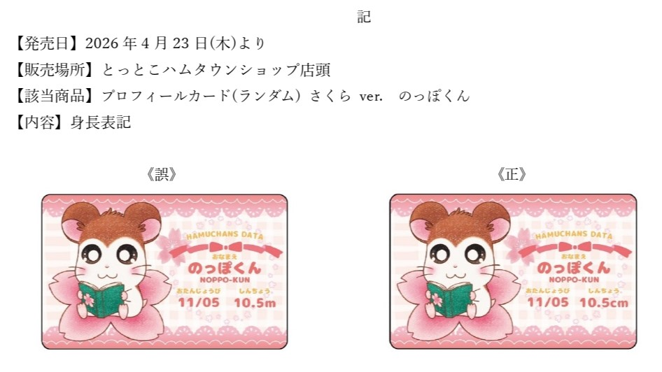
80 / LABEL↗Noppo-kun’s profile card gives his height as 10.5m. The unit should be centimetres, which makes the hamster more than ten metres tall.
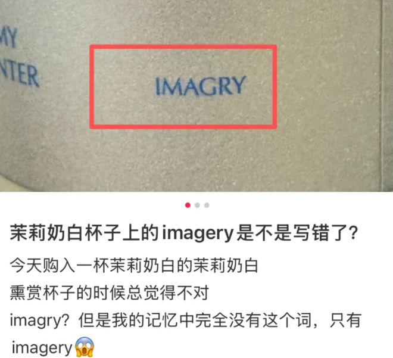
81 / PACKAGING↗The cup prints IMAGRY where the slogan needs IMAGERY; the missing E leaves a word that does not exist.
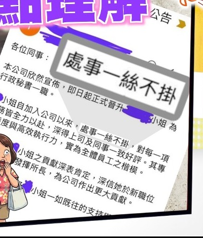
82 / NOTICE↗A promotion notice praising a colleague’s 一絲不苟, meticulous, work prints 一絲不掛 instead—“stark naked”, one character away.
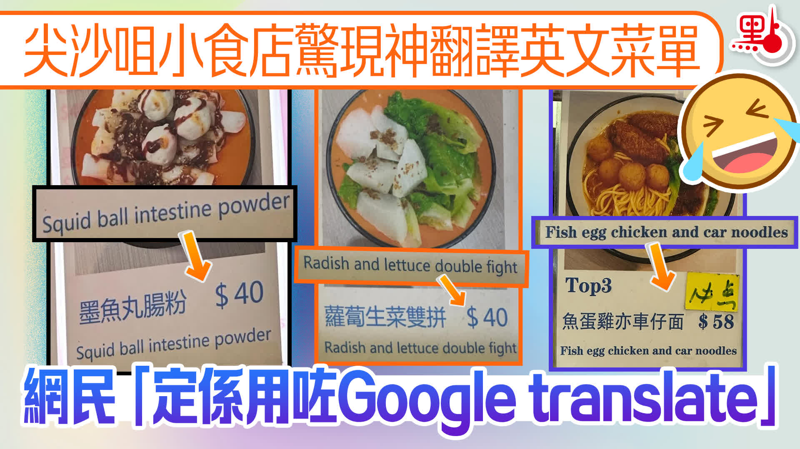
83 / MENU↗The English menu renders 雙拼, a two-item combo, as “double fight”, and 腸粉, a rice-noodle roll, as “intestine powder”.
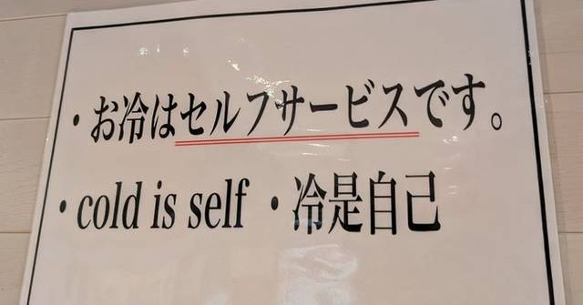
84 / SIGN↗お冷はセルフサービスです says the cold water is self-service; the English line makes it “cold is self”, as if the self were a temperature.
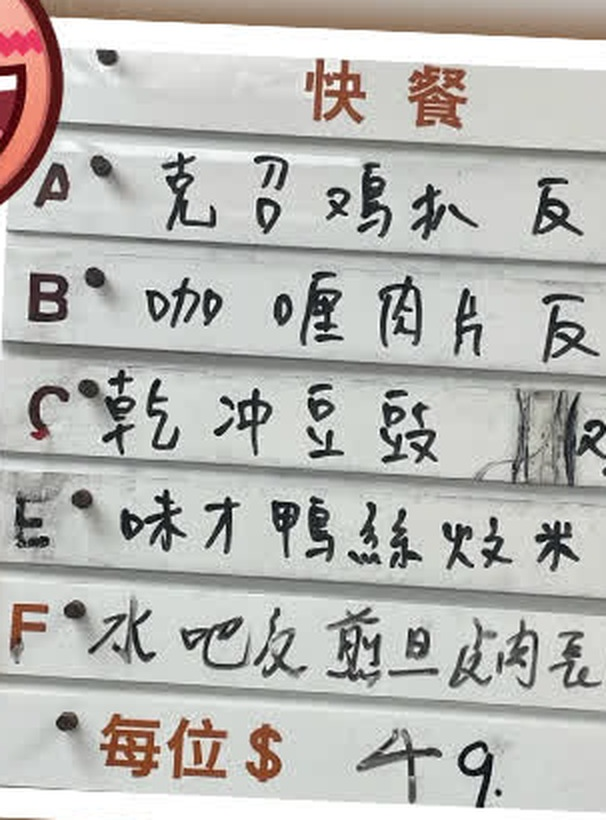
85 / MENU↗The handwritten fast-food board ends every rice dish in 反, “reverse”, where 飯, rice, belongs, so curry pork slices become 咖喱肉片反.
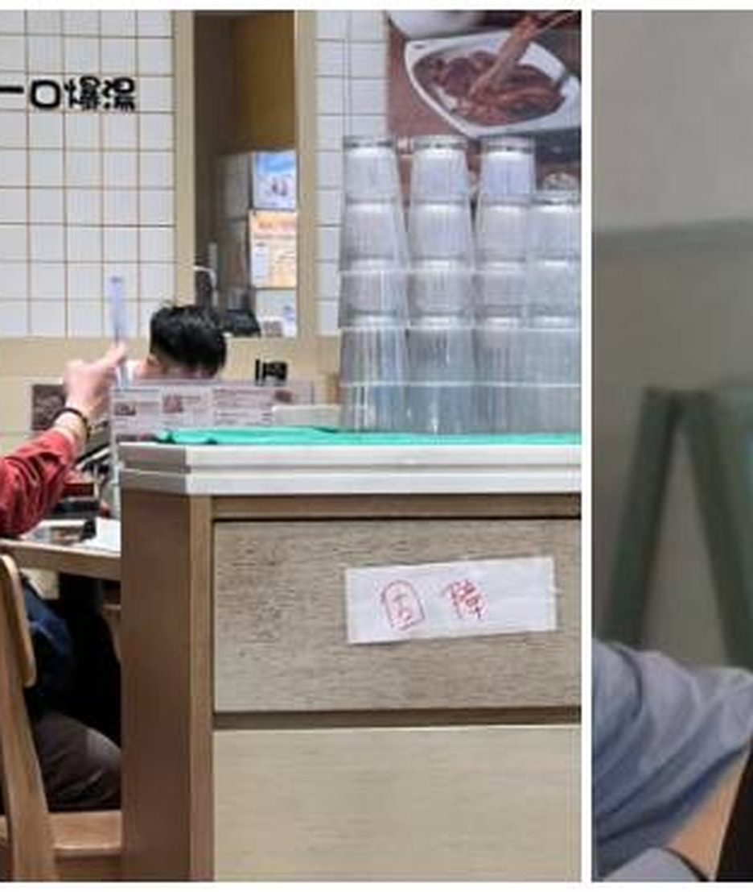
86 / NOTICE↗Told that a staff notice's 壞咗 was too colloquial, the manager rewrote it as 固障—the word for a fault is 故障.
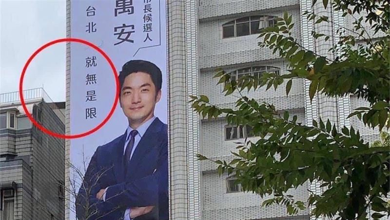
87 / BILLBOARD↗A campaign billboard promised 你＋台北 就是無限 but went up as 就無是限, with 是 and 無 swapped, so the slogan stops parsing.
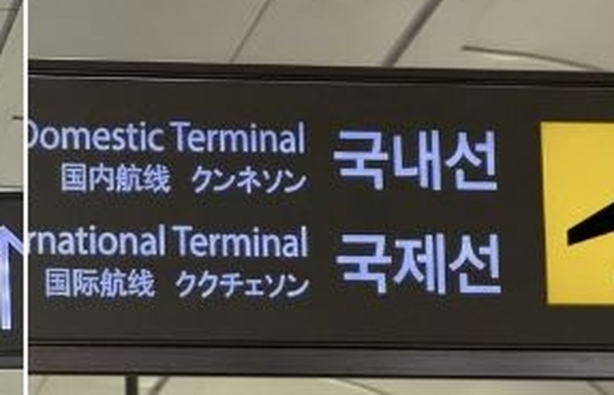
88 / SIGN↗Gimpo Airport set its Korean terminal names in katakana, so 国際線 appears as ククチェソン—the hangul 국제선 spelled out in Japanese script.
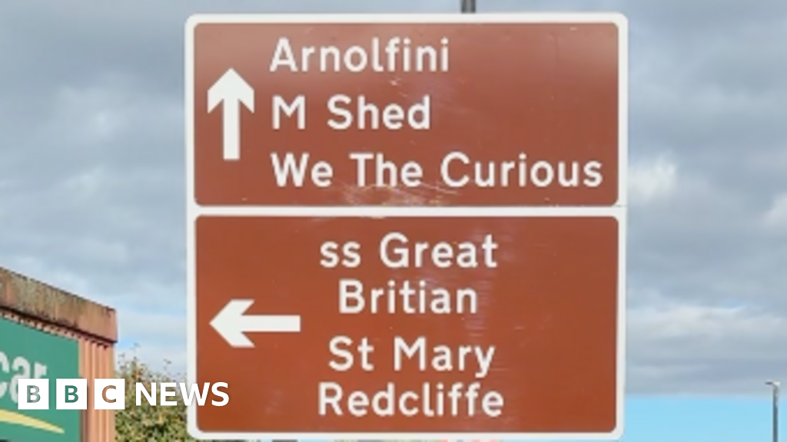
89 / SIGN↗The brown tourist sign points to the ss Great Britain but prints it Great Britian, one letter short of the ship.
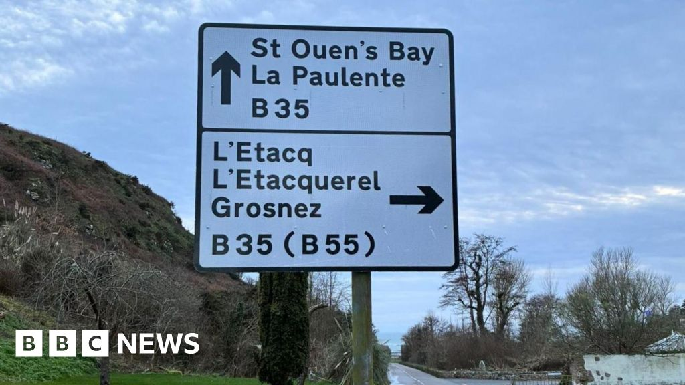
90 / SIGN↗A Jersey road sign sends drivers to La Paulente; the coastal slipway it means is La Pulente.
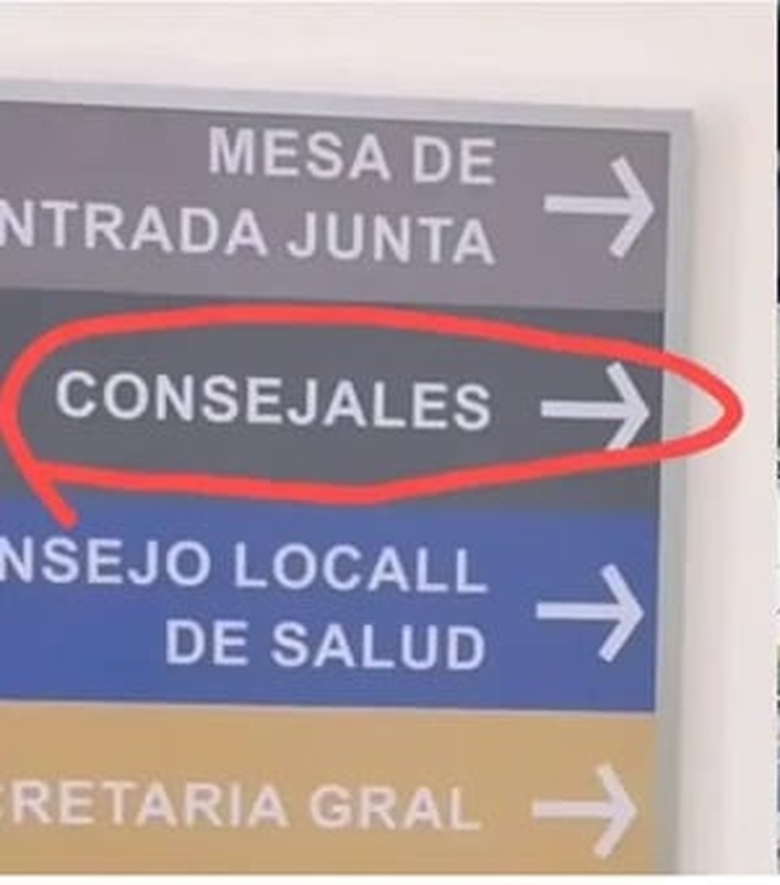
91 / SIGN↗A municipal directory in Luque lists the councillors as CONSEJALES; the Spanish word is concejales, and the missing c is the story.
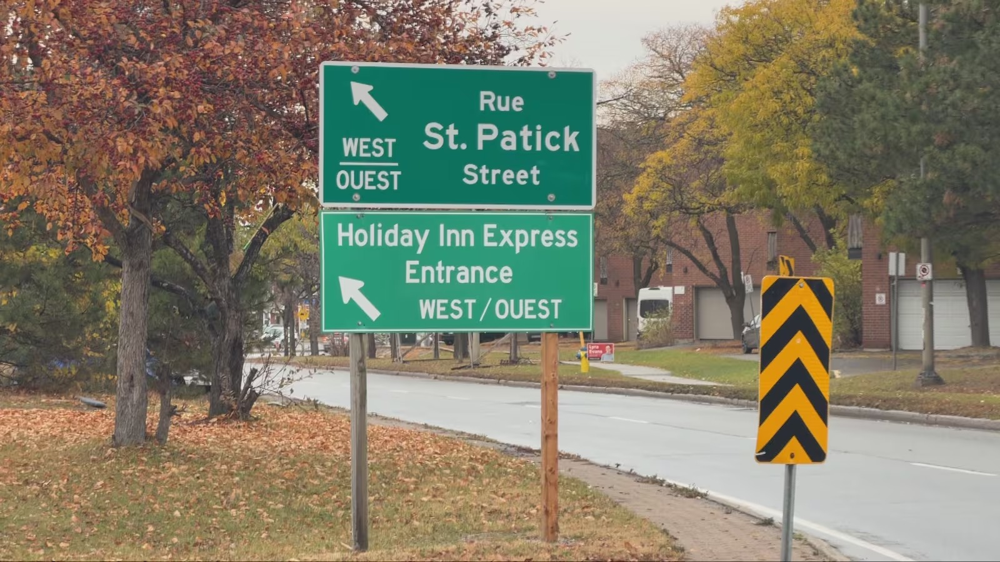
92 / SIGN↗A green street sign in Ottawa sends drivers to St. Patick Street; the R in Patrick never made it onto the plate.
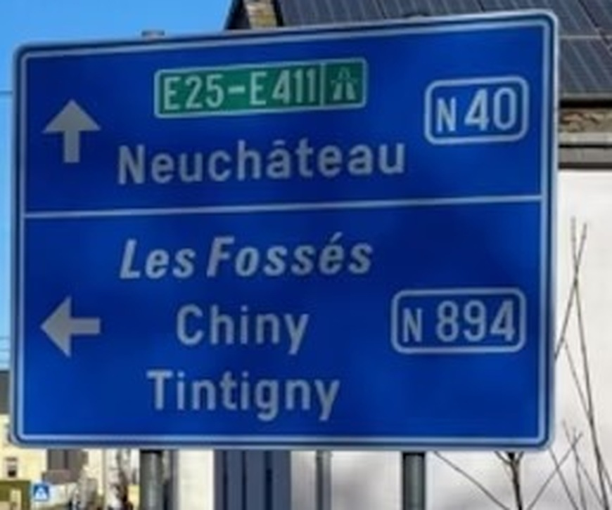
93 / SIGN↗A sign at Léglise pointed to Neuchâteau — Neufchâteau minus its f — and stood that way from 2020 until a driver reported it.
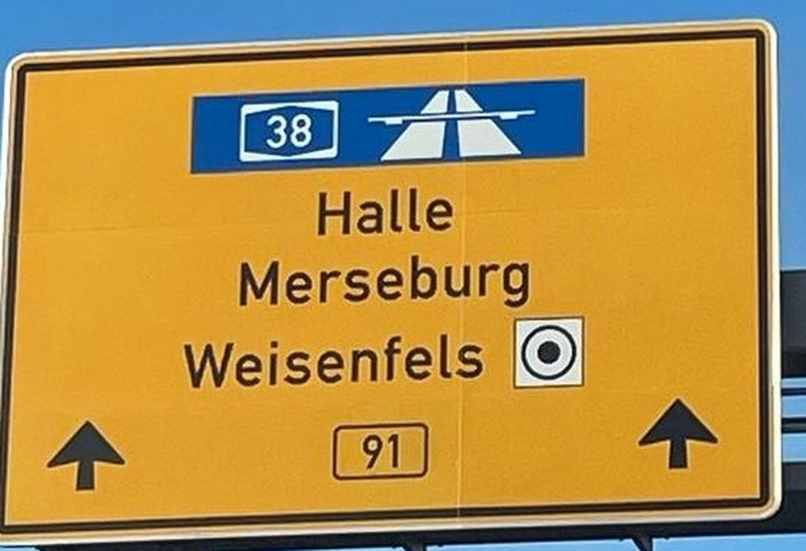
94 / SIGN↗An overhead sign on the B91 sends drivers to Weisenfels, while the plate beside it reads Weißenfels-Süd — the town name lost its ß.
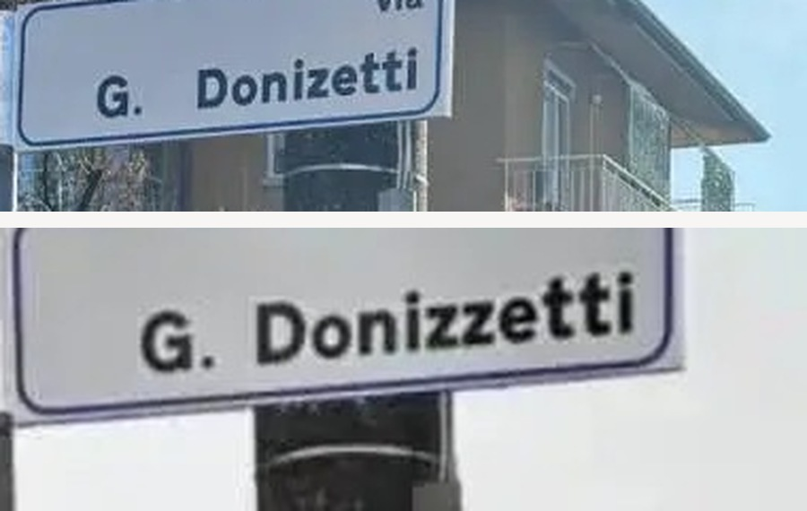
95 / SIGN↗A Brembate street sign gave Gaetano Donizetti a second z, so the composer's street read via Donizzetti until the plate was replaced.
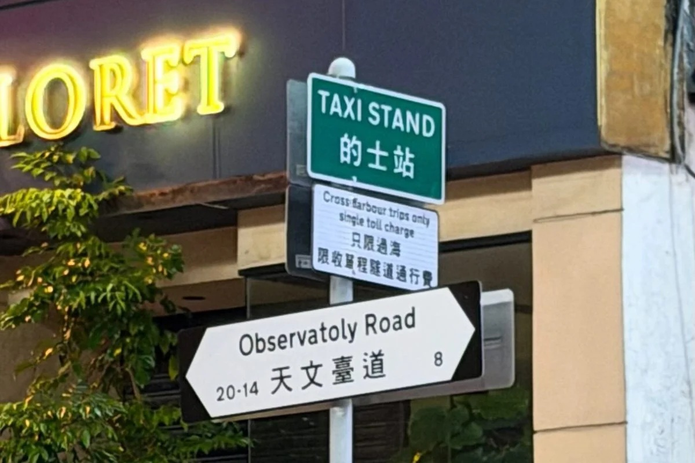
96 / SIGN↗A Hong Kong street plate prints Observatory Road as Observatoly Road; the department said a contractor copied an old, scratched marker.
A welcome banner on the Roselle bridge reads “Thanks for visivting”: the second i of visiting came out as a v.
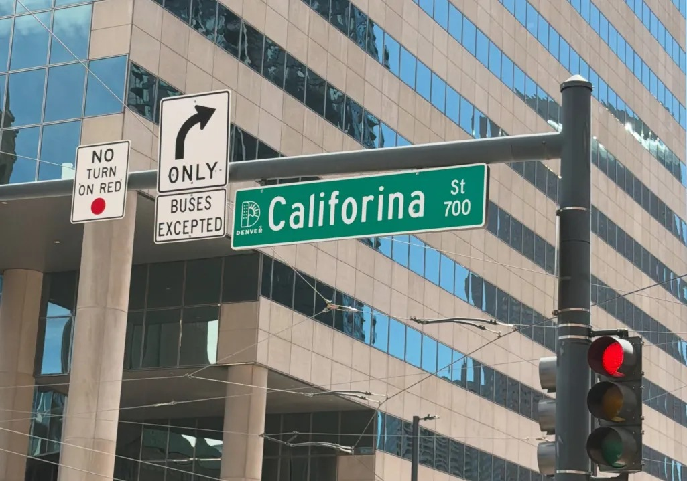
98 / SIGN↗Denver’s California Street went up as Califorina Street, with an extra r; the mayor posted the photo and crews replaced the plate.
No entries found. Try another search or filter.